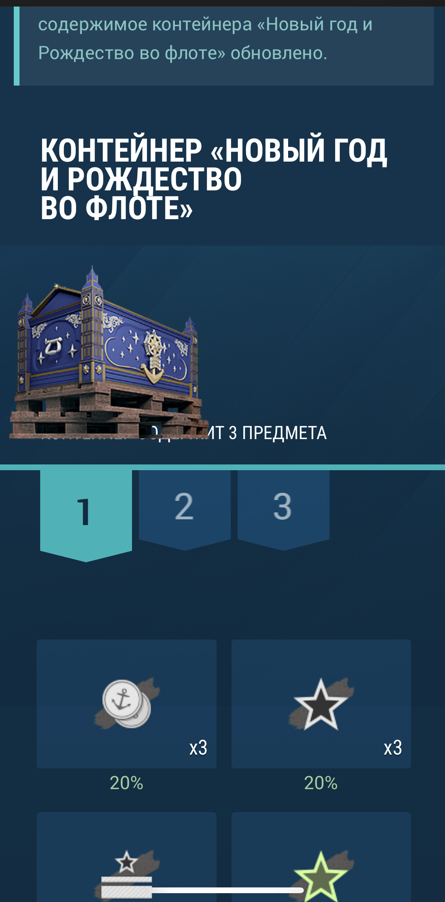
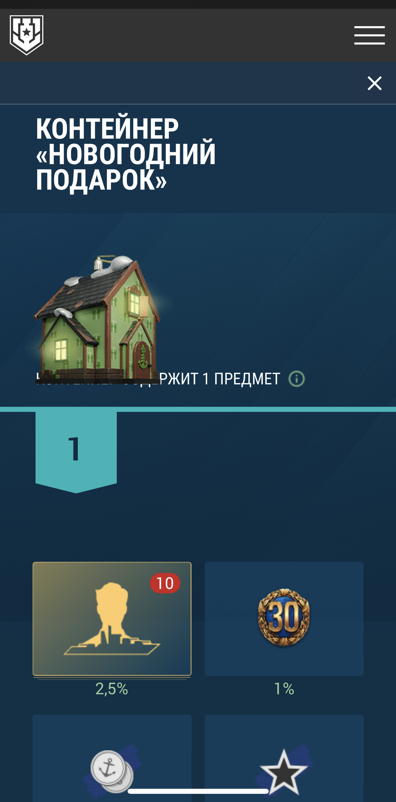
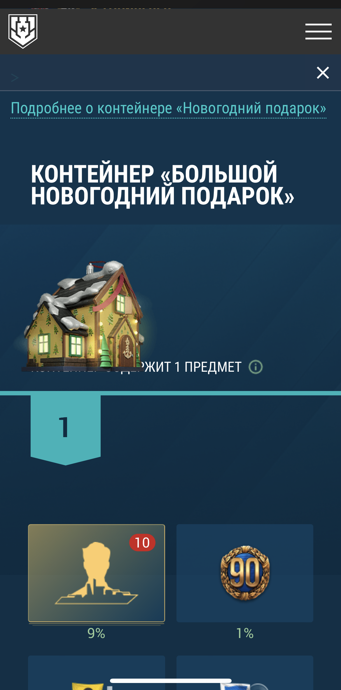
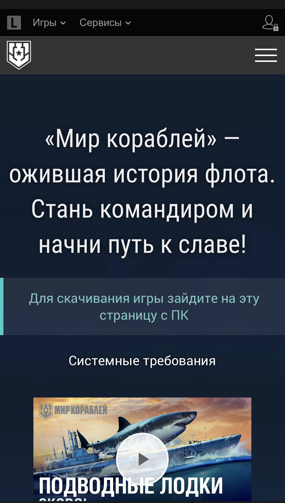
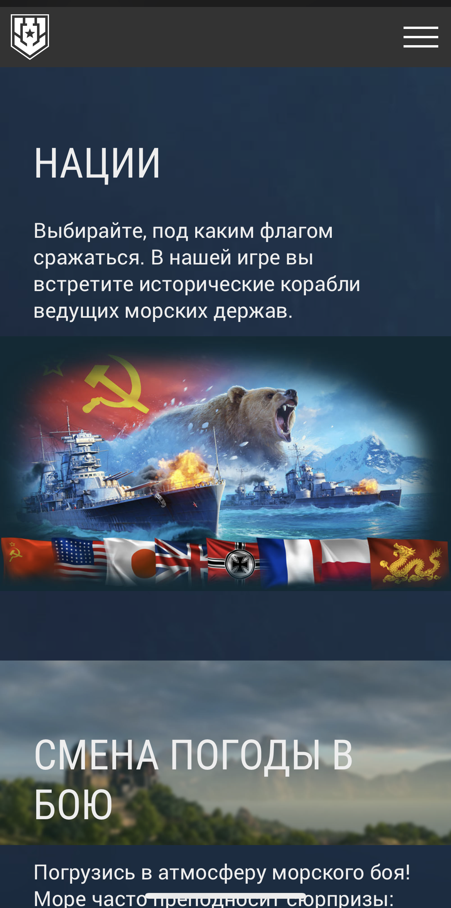
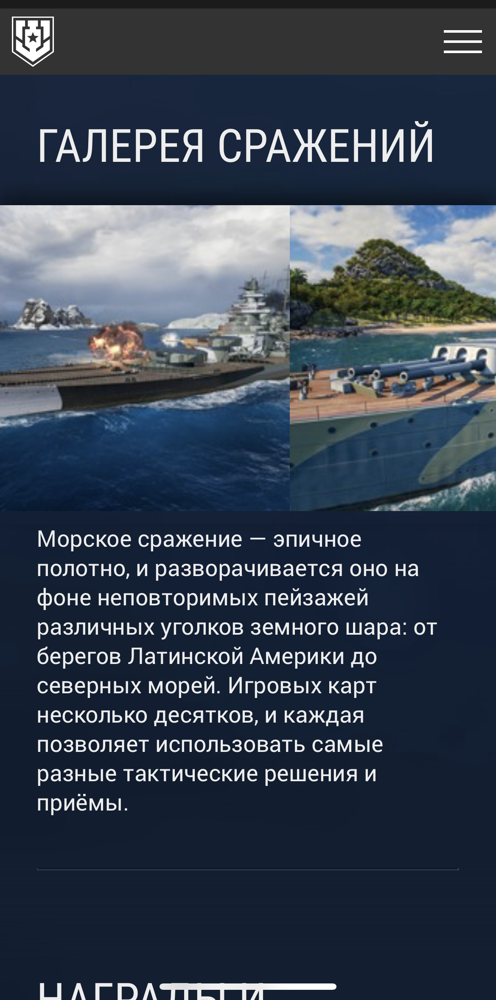

ЗАДАНИЕ №1
Расскажите, с какими сайтами других игровых компаний
вы знакомы (или спешно познакомились прямо для этого тестового задания).
Приведите пример 5 новостных публикаций, которые очень понравились
вам по подаче информации. Представьте ответ в виде таблицы:
Ссылка на новость
Какую задачу решает эта новость?
Почему это оформление лучшим образом подходит для этой задачи?
1
 Нажмите, чтобы перейти по ссылке!
Нажмите, чтобы перейти по ссылке!
Презентация нового формата акции «Прибыло пополнение».
Новость подобного содержания должна быть освещена по фактам: сроки, условия, награды и главный приз. Необходимо кратко и четко донести информацию до игрока, но не перегружая его, а призывая начать играть и заработать себе главный приз. Поэтому краткий текст и сопровождение его всего несколькими картинками помогает это осуществить.
2
Нажмите, чтобы перейти по ссылке!
В данной статье ставиться несколько задач:
- Культурно - просветительская.
- Обзор новых скинов, новых обликов, временного игрового режима.
- Обзор жизни компании.
Четкой структуры в данной статье нет. В одном параграфе может упоминаться обо всех ее задачах.
Однако присутствует много видео, для наглядной демонстрации.
Также представлена фотография с мероприятия компании.
Благодаря сочетанию разных выразительных средств и воздействию,
создается ощущение, что тебе написал приятель.
Настроение у статьи дружелюбное, что способствует положительным эмоциям пользователя после ее
прочтения.
Таким образом пользователь:
- узнал что-то новое;
- увидел новинки игры, которые захочется скорей попробовать самому;
- получше познакомился с самой компанией и ее членами.
3
Нажмите, чтобы перейти по ссылке!
Обзор новых костюмов для персонажей.
Команда игры “Dead by daylight” достаточно давно начала выстраивать взаимодействие с игроками от лиц реальных работников команды. Эта статья не стала исключением.В ней присутствуют мысли членов команды, рассказы о процессе создания. Все это сопровождается артами и картинками с уже готовыми костюмами.
4
Нажмите, чтобы перейти по ссылке!
Обзор пополнения коллекции фоторежимов.
Считаю очень лаконичное и приятное взаимодействие и с игроками, и с фанатами вселенной. Много текста помогает создать рекламу сериалу, который сейчас выходит, а слайдер с фотографиями реализован очень необычно и интересно.
5
Нажмите, чтобы перейти по ссылке!
Обзор нового убийцы в Dead by daylight.
Так как данный сайт позиционирует себя как интернет-издание и представляет ежедневно свежие новости в основном по игровой индустрии. Оформление соответствующее. Есть картинка и видео с новым интро игры. Также в статье в виде текста кратко представлены факты: перки, карта, взаимодействие.
ЗАДАНИЕ №2
Самая главная статья каждого месяца — патч-ноут, «обновление».
Сравните две статьи (одна поновее, вторая — прошлогодняя)
и расскажите, что изменилось в лучшую или худшую сторону,
поделитесь своими общими впечатлениями, скажите, что вы оставили бы,
а что стоит изменить (и почему):
https://korabli.su/ru/news/game-updates/update-0910-american-battleships/
https://korabli.su/ru/news/game-updates/update-01111-new-year/
Быть может, у вас есть идеи, как это сделать ещё лучше – поделитесь с нами.
В статье “Обновление 0.11.11: Новый год” могу отметить в основном положительные изменения.
Из улучшений по сравнению со статьей “Обновление 0.9.10:
Американские линкоры. Часть 2” выделяю, что:
+ Появилась удобная навигация в начале статьи.
+ Также появилась удобная структура чтения статьи. При нажатии на плашку появляется или
исчезает часть текста.
Таким образом информация подается дозировано, что улучшает ее восприятие и понимание.
+ Улучшилась интерактивная часть сайта.
+ Появились интерактивные элементы взаимодействия пользователя с контентом (навигация по
кораблям разного уровня,
а также контейнер “новогодние подарки”)
+ Появился удобный слайдер (просмотр наград за боевые результаты, морозная
гонка)
+ Больше работы с цветами текста, улучшает восприятие и становиться более читабельным.
Однако один недостаток мне удалось обнаружить.
При мобильной версии в блоках
(КОНТЕЙНЕР «НОВОГОДНИЙ ПОДАРОК», КОНТЕЙНЕР «БОЛЬШОЙ НОВОГОДНИЙ ПОДАРОК», КОНТЕЙНЕР «ГИГАНТСКИЙ НОВОГОДНИЙ ПОДАРОК»)
Адаптивность этого блока пропадает, текст находиться под изображением.



ЗАДАНИЕ №3
Рассмотрите и сделайте анализ страницы «Об игре», перечислите ошибки в дизайне, вёрстке, как это можно улучшить, почему и какой эффект от улучшения можно получить.
Из достоинств страницы «Об игре» могу отметить:
- Страница не перегружена и интуитивно понятна;
- Единство стилей и отступов;
- Текст краткий и разделен на смысловые блоки. Он передает суть и не перегружает пользователя информацией;
- Наличие интерактивных элементов (в блоке “Нации” - выбор флага, в блоке “Галерея сражения” - слайдер);
- Продуманно пропадает кнопка “Скачать игру” при экране ширина, которого меньше 575px. И при мобильной версии появлятся предупреждение “для скачивания игры зайдите на эту страницу с ПК”
Из ошибок могу отметить:
ПРЕДЛОЖЕНИЕ:
вместо картинки поместить видео, чтобы изначально новый пользователь могу заинтересоваться и увидеть атмосферу игры. Для мобильной версии оставить статичную картинку в этом блоке.


ПРЕДЛОЖЕНИЕ 1:
при экране меньше 990px поменять структуру контейнера. С помощью Grid сделать 2 столбика (в первой вертикально расположить флаги, которые также будут реагировать на наведение или нажатие, а в правой колонке сделать информационный блок). Этот блок важен, так как каждый игрок может найти для себя наиболее привлекательную нацию и вступить в ряды игроков “Мир кораблей”!ПРЕДЛОЖЕНИЕ 2:
Либо для флагов добавить слайдер, а информационный блок расположить ниже.ПРЕДЛОЖЕНИЕ:
при перелистывание изображение необходимо отцентровать изображение в блоке. Таким образом просмотр изображение станет удобней и проще.

ЗАДАНИЕ №4
Мы думаем, вам знакома игра «Крестики-нолики».
Реализуйте интерактивную игру бота с пользователем.
Уровень интеллекта бота не имеет значения.
Используйте JavaScript для реализации игровой логики.